### Accélérer la valorisation des données Fabien Antoine<br> Ministère de l'Intérieur
# Les données
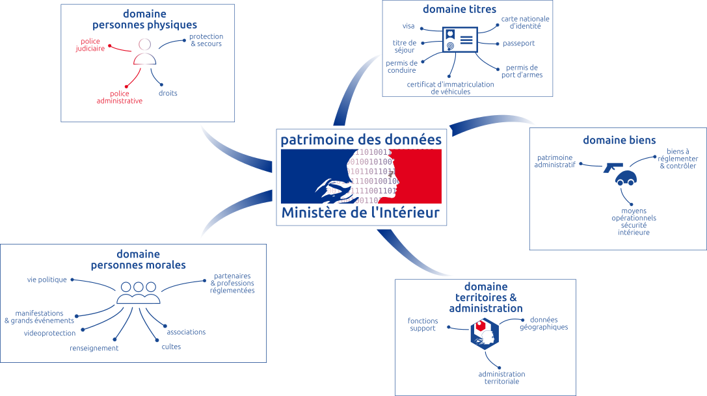<br/>
## variété - structurées et référencées (passages au frontières) - opendata (insee, IGN, météo, ...) - libellés libres (villes, véhicules, noms, sociétés) - géographiques (zones de compétences : sécurité intérieure, civile, communes, ...) - textes (procédures police) - images (radars, vidéosurveillance)
## volumes - titres : > 100 millions - infractions : > 1 Mds - traffic: > 1000 Mds
## velocité - temps statistiques : année / mois / semaine (observatoires sécurié intérieure, routière ...) - temps opérationnel : - jour / minute (supervision opérationnelle - sécurité civile, intérieure) - seconde (systèmes d'identification: contrôle frontière, ...)
# la datascience
#### "pyramide de Maslow" de la datascience 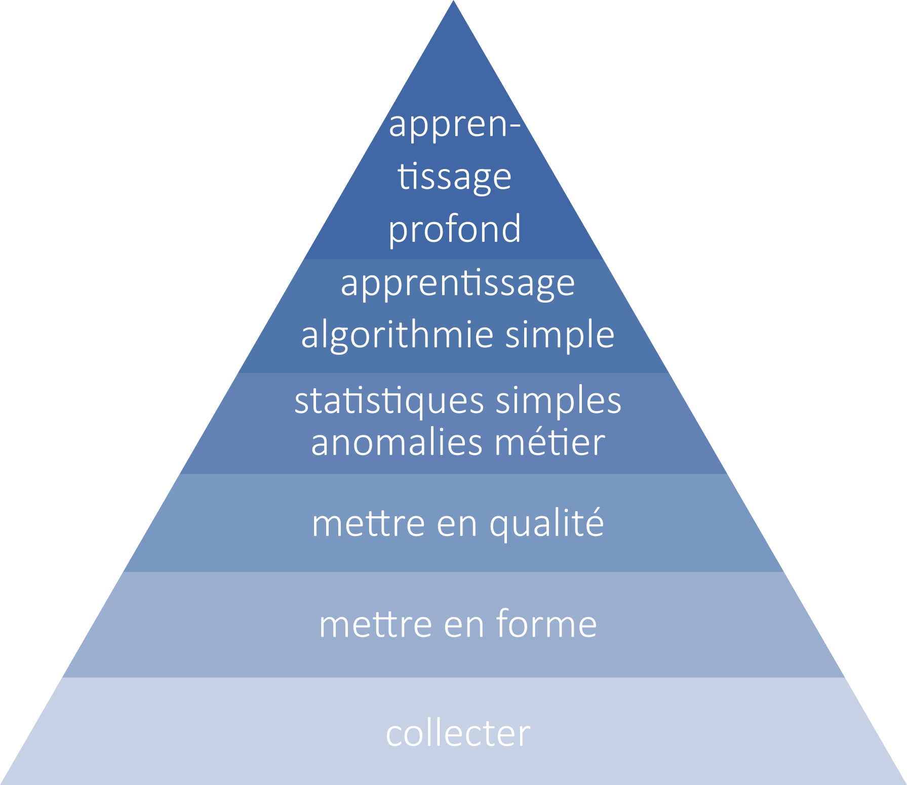<br/>
#### bon à savoir - 60% du travail = préparation - 20% = algorithmie/statistiques simples - IA si cas mature ou ciblé - complexité ⊥ bénéfice <br/><br/> #### itérer avec le métier pour évaluer la valeur
#### rôles et compétences variées - data architect : <small>architecture big data, sécurité, machine as a code</small> - data engineer : <small>transformation, automatisation, optimisation, qualité</small> - AMOA data: <small>modélisation et bénéfice métier, rapports visuels</small> - data scientist : <small>algorithmie générale: graphes, fuzzy, apprentissage simple ...</small> - data expert : <small>géographique, deep learning image ou texte</small> - développeur : <small>valorisations de données interactives</small>
# l'accompagnement #### de la mission de coordination et d'appui à la valorisation des données
- recensement des cas d'usage data : <small>méthode, capitalisation</small> - POC cas d'usage : <small>développements, challenges EIG, pré-production</small>
#### recensement des cas d'usages #### éducation routière 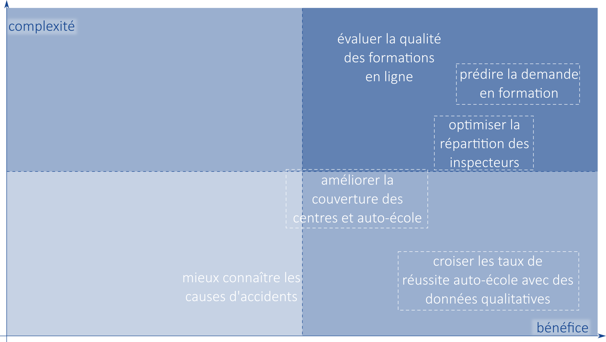<br/>
#### un recensement à généraliser - favoriser l'apport de la datascience au métier - analyser et suivre le bénéfice des actions data - prioriser - diffuser, communiquer données et cas d'usage sur http://catalog.datalab.mi
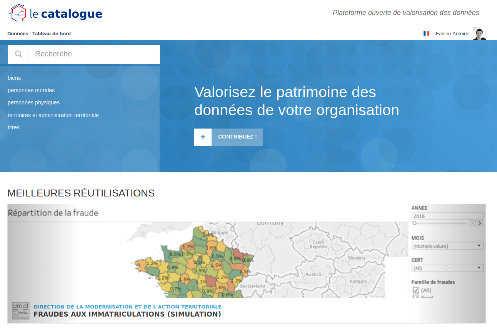<br/>
#### POCs cas d'usage - accompagner depuis l'idée initiale - montage projet <small>financement/spronsoring, FTAP, EIG, stages, interne ...</small> - maquetter/faire/encadrer <small> architectures, analyses, algorithmes, développements ...</small> - héberger / maintenir sur le datalab <small> jusqu'à industrialisation sur l'entrepôt </small>
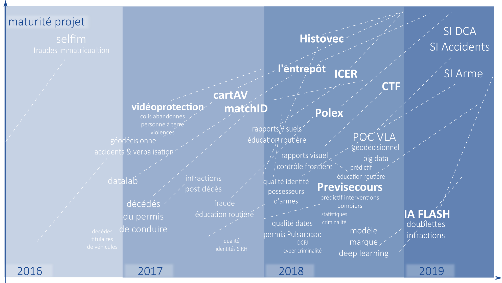<br/>
#### mobilisation des compétences 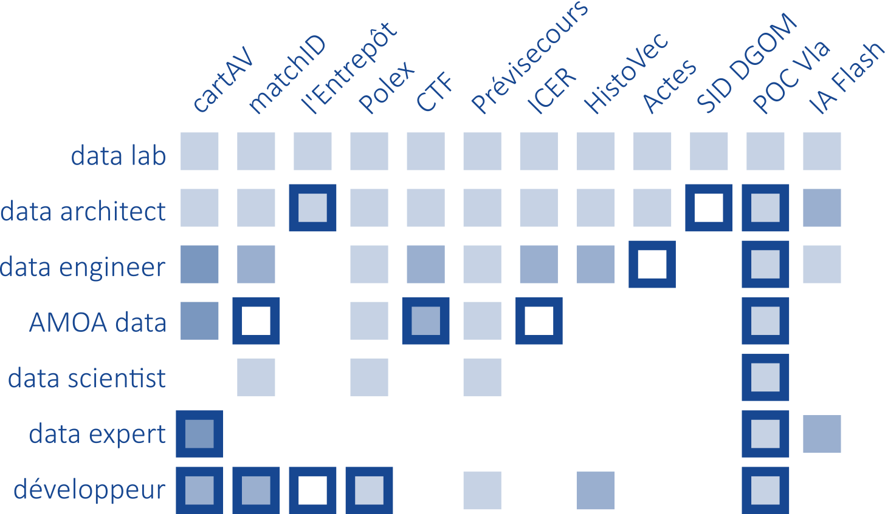<br/>
#### Facteurs de succès - sponsor direction et implication du métier opérationnel - cadre de protection des données <small> mandats, engagements personnels, sécurité </small> - disponibilité des données <small> anticipation de 3 à 6 mois </small> - dispositif léger : <small> reporting minimal et documentation a posteriori </small> - savoir réviser / décomposer ses objectifs - anticiper la mise en production <small> capitaliser sur l'entrepôt </small> - capitaliser y/c les échecs <small> code source, rapports, communication</small>
# les outils
- Dataiku/DSS <small> collecter, mettre en forme, en qualité, alogrithmie, apprentissage simple et profond </small> - Tableau <small> rapports visuels, statistiques évoluées </small> - bases analytiques <small> vertica (aggrégation jusqu'à l'exabyte), elasticsearch (fuzzy), postgis (géographique)</small> - matériel (datalab: 400 vCpu, l'entrepôt: scalabilité du cloud MI)
#### Dataiku - pour: data architect, data engeneer, data scientist, data expert, développeur - collaboratif - technologies: SQL, python/scikit, R, scala, hadoop, tensorflow, ... - collecte des données jusqu'àu deep learning - API de scoring, web apps
#### dataiku: l'orchestration des traitements 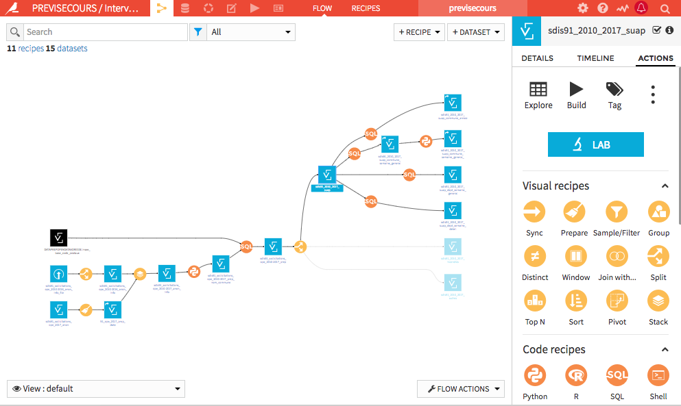
#### dataiku : le laboratoire prédictif 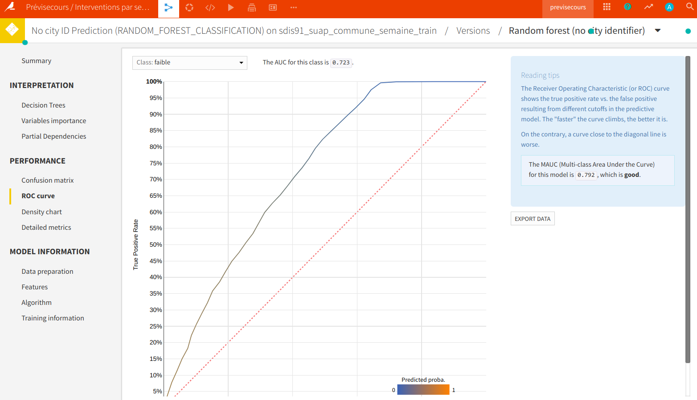
#### Tableau - pour: data scientist, statisticiens, contrôle de gestion - calculs dynamiques jusqu'au millier de milliard d'enregistrements - visualisations avancée, jusqu'au géographique (simple)
#### tableau : les tableaux de bord interactifs 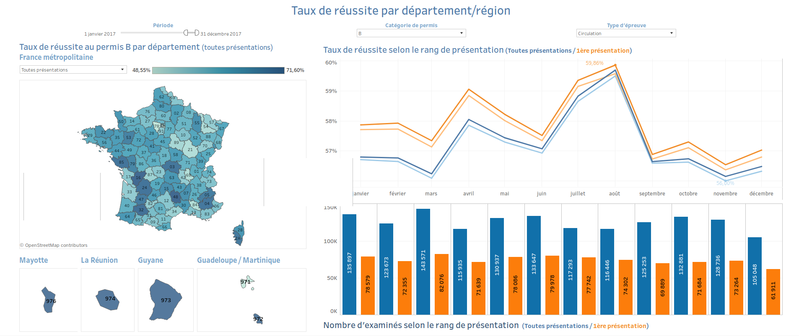
#### tableau : formules type excel sur du big data 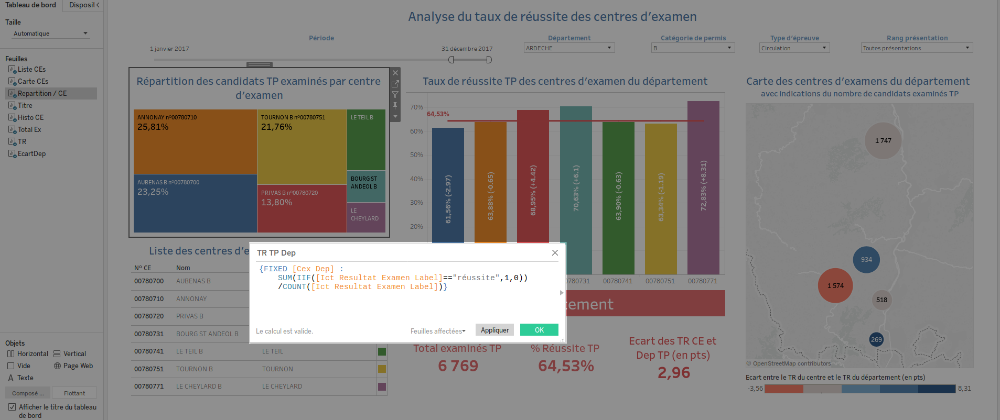
# Résultats
<br/> <small>** fuzzy matching et apprentissage automatisé ** <br/> - rapprochements d'états civils jusqu'à 100 millions d'identités - des millions de morts détectés dans les bases du ministère - une dizaine de cas traités (permis, immatriculations, armes, accidents, ) - gros volumes, haute précision, API de scoring, doublons, graphes - score moyen de 95% (rappel=précision), AUC 99% - publication d'un logiciel libre avec jeu opendata - travaux avec d'autres administration (Finances, TRACFIN, Travail) documentation et tutoriel sur https://matchid-project.github.io/
<img style="max-width: 130%; margin-left:-150px" src="img/matchid-frontend-validation.png">
<br/> <small>** géocodage et géodécisionnel avancé ** <br/> - croisement géographique accident et verbalisation - intégration de **15 sources** de données dont géographiques (IGN, opendata accidents) - 98,7% de couverture du géocodage (contre 55% pour le meilleur algorithme : addok/BAN d'étalab) - 90% de géocodage de qualité suffisante pour une exploitation en dataviz - 5 niveau géographiques interactifs filtrables (région/départements/circonscriptions/communes/routes/points) - utilisation expérimentée sur 100 circonscriptions de police - déploiement DGPN 2019 - code opensource publié en ligne (accès restreint) sur http://beta.datalab.mi/av
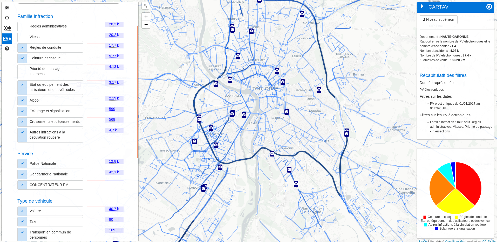
<br/> <small>** opendata et modélisation prédictive** <br/> - aider les **sapeurs-pompiers** à intervenir plus efficacement en anticipant leur volume d'interventions - intégration de **12 sources** de données opendata (méteo, pollen, épidémies, ...) et 2 métiers (ssmsi, sdis 91) - prévision semaines : score AUC 90% sur le secours à la personne, 78% incendies - expérimentation SDIS 91 en cours - hackathon en 2019 pour favoriser l'approfondissement et la généralisation - partenariat Nexis envisagé Site du projet: https://previsecours.fr
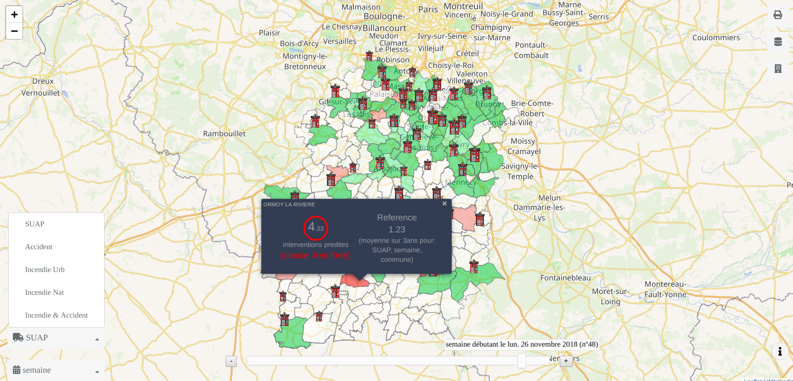
<img width="150" style="padding-left: 100px;margin-top:-100px" src="img/polex.svg"> <br/> <small>** analyse d'anomalie statistiques ** <br/> - lutte contre la fraude aux examens du permis - 6 cas traités, un centre d'examen déjà fermé - incubateur LAB-mi et label start'up d'état - 1er déploiement octobre 2018
<br/> <small>** publication de données personnelles sécurisées ** <br/> - permettre au vendeur de véhicule d'occasion de connaître l'historique de son véhicule et le communiquer à tout acheteur potentiel - pseudonymisation et hash salé - incubateur LAB-mi et label start'up d'état - réalisation/mise en production homologuée en 2,5 mois - évaluations avec Leboncoin, Armis auto rendez-vous sur https://histovec.interieur.gouv.fr
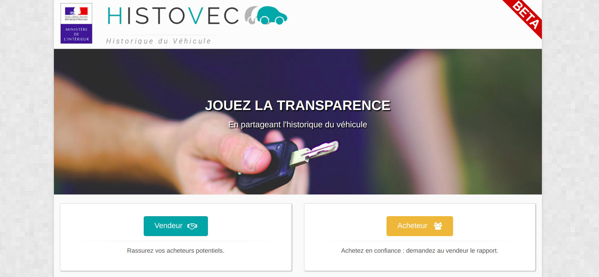
#### contrôle frontières <small>** statistiques opérationnelles ** <br/> - statistiques générales du passage aux frontières (150M enregistrements) - suivi opérationnel des déploiements (Parafe, Covadis) - statistiques des dysfonctionnement techniques (ouverture Sas, certificats ...) - réduction de la charge opérationnelle de suivi de l'équipe projet (~50k€/an) - calculs avancés sur données de détail (100M d'enregistrement) - opérationnel à la semaine voire / quart d'heure (Covadis/FPR2) - 20 tableaux de bords, 144 vues
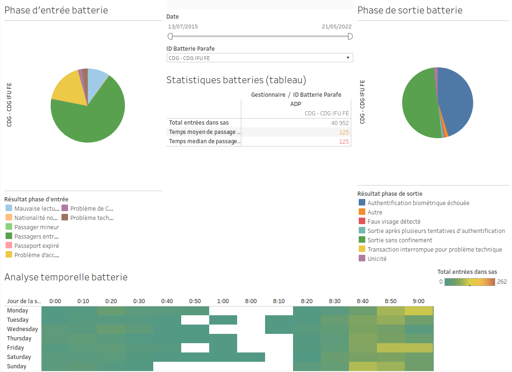<br/>
#### décisionnel éducation routière <small>** statistiques nationales et départementales ** <br/> - résultats des examens théorique et pratique du permis (20M d'enregistrements) - activité des inspecteurs - 30 tableaux de bords, 300 vues - organisation dévops du dataprep au dataviz - qualification en cours, production début 2019 - suites: cas datascience (prévisions volumes d'examens, positionnement autoécoles)
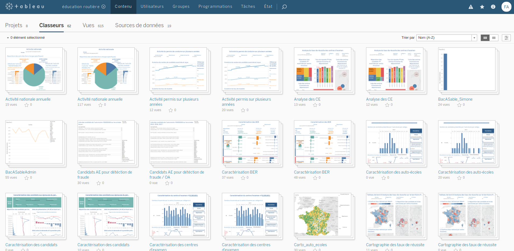<br/>
# Industrialisation #### du datalab à l'entrepôt 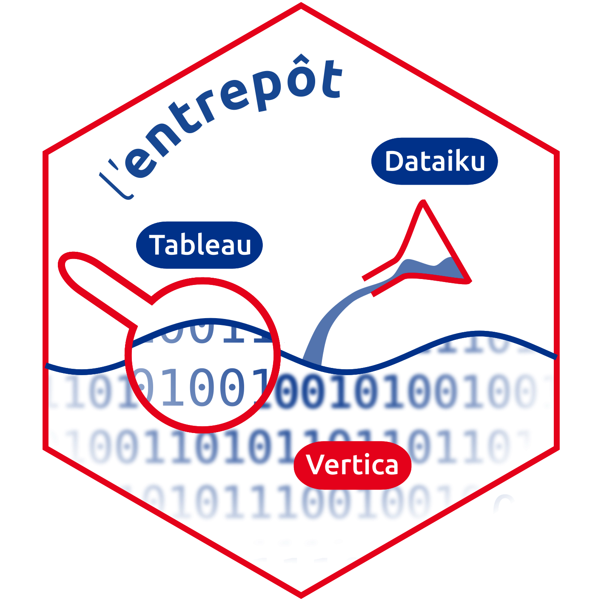<br/>
#### datalab - de l'avant-projet jusqu'à qualification - évolutions de l'architecture <small> gros volume, nouvelle technologie </small> <br/><br/> #### l'entrepôt production et évolutions itératives, sur le cloud MI
#### déploiement & sécurité des données - un entrepôt statistique général <small> - par zone fonctionnelle ou direction métier (e.g 360 conducteur et véhicules)<br/> </small> <small> - données anonymes ou pseudonymisées, croisements statistiques autorisés </small> - un entrepôt par donnée protégée <small> - par zone fonctionnelle ou sous-direction : e.g. éducation routière (Polex) vs immatriculations (Selfim) <br/></small> <small> - finalités de **lutte contre la fraude**, qualité et **anonymisation** des données pour chaque quartier fonctionnel, un entrepôt (e.g éducation routière, permis, immatriculations) anonymisation </small>
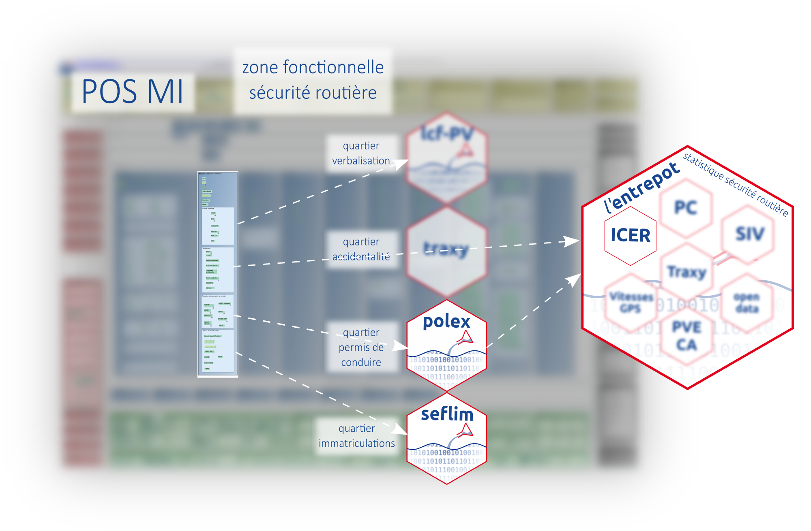<br/>
# Perspectives
<br/> <small>** deep learning images ** <br/> - détecter automatiquement marque et modèle de véhicules sur les images radars - bloquer l'envoi de PV aux victimes de fausses doublettes - architecture deep learning (GPU/TPU ? cluster Tensorflow ?) - enjeux d'anonymisation (archivage, opendata/hackathons)
<br/>
#### POC Vitesses <small>** 1000 milliards d'enregistrements ** <br/> - définir les métriques pertinentes (dépassements de vitesse, ...) - évaluer l'impact des politiques de sécurité routière sur la pratique - enjeux d'architecture (vertica, Hadoop) - décisionnel géograhique gros volume (galligeo, custom, ... ?)
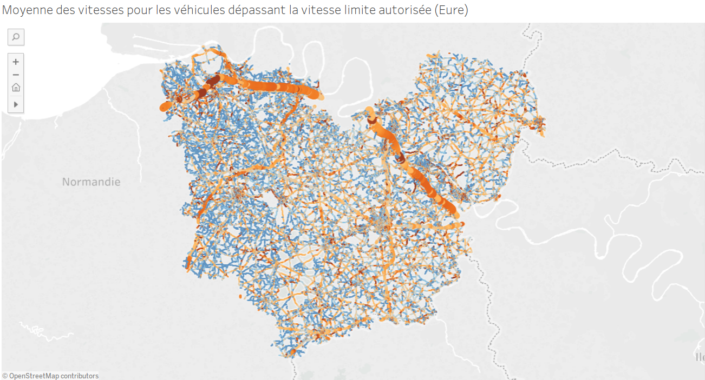<br/>
#### déploiement de l'entrepôt - finalisation : éducation routière, contrôle frontière - en cours: Actes, SID DGOM (+geo business) - opporunités: - sécurité routière :accidents / verbalisations / immatriculations / permis - sécurité civile : infosdis
# questions ? <small><a href="./valdon2018_datalab_FA.pdf">télécharger la présentation en version pdf</a> <br /> <small><a href="http://histovec.fr/histovec/">site interne du datalab</a>